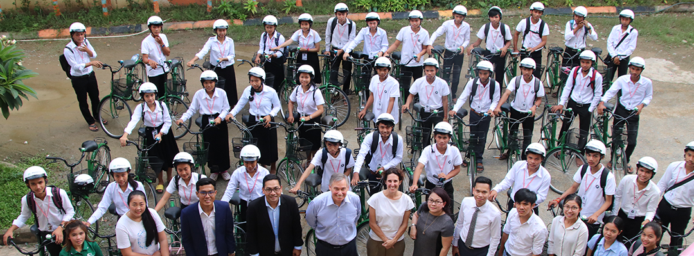
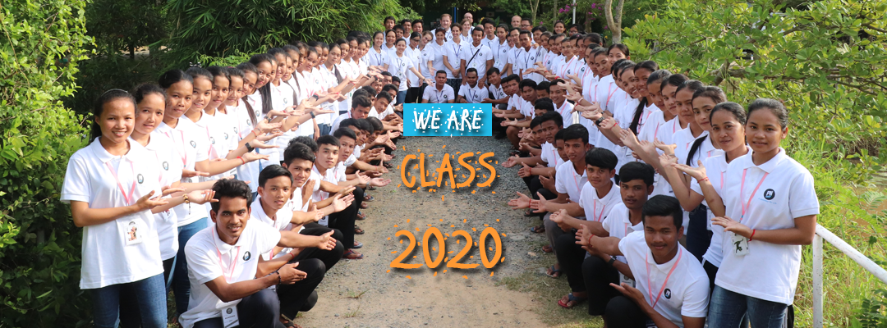

Passerelles numériques is a French NGO created in 2005 and operating in Cambodia, the Philippines and Vietnam providing IT Training.
Education In PNC
Cambodia – Rapid growth of Partnership Development
25 Nov 2019 | Cambodia, News

Passerelles numériques|Gateway for life
Our Active for Us
If you are looking for new challenges, we are regularly looking for staff, volunteers, and interns for our headquarter in France or to act locally, in one of our centres, in Cambodia, Philippines and Vietnam, as well as for our branches in Singapore and Hong Kong.

Cambodia – PNC Class 2020 Integration days
In October every year, an integration week is organised by the PN Cambodia Education Team to welcome the new students , who come from different provinces, and to prepare them for their PN journey.
 Teacher Professional life of PNC
Teacher Professional life of PNC
#SuperStaff #TheFridayQuote Tanghuot Teng is a Professional Life Trainer at #PN #Cambodia. "As professional teachers, we have to pay attention to the lessons learned, to trust our helpful instincts & not be scared of taking risks or to wait for some miracle to come" #TeacherLife
financer-des-etudiants-au-cambodge
In Cambodia, society is still traumatized by a long civil war and the Khmer Rouge tragedy. 40.2% of the workforce survives on less than $ 2 a day. As a result, many young Cambodians have to give up their studies, migrate to neighboring countries, and work in very difficult conditions in order to send money to their families.
 Passerelles numériques at the Women’s Forum Asia
Passerelles numériques at the Women’s Forum Asia
Thanks to the support of the French Embassy in Cambodia and of the organizers of the Women’s Forum, Passerelles numériques was able to attend and contribute to the exchanges, during the Youth and Leaders Forum, the first part of the Women’s Forum Asia event organized in Singapore for its 2019 edition.
Partner
Lastly, thanks to North Bridge International School Cambodia, Enfant D’Asie, Kampuchea Balopp, World Vision Care, World Family Care, Mission Humanitaire, Peaceful Children’s Home, and Marie Stopes for their continuous support of our educational activities.
How to become a partner?
You can support and make donations through student sponsorship, financial and material donations, and offering our students internships and job opportunities, as well as working with the PN team through skill-sharing with our staff and students.